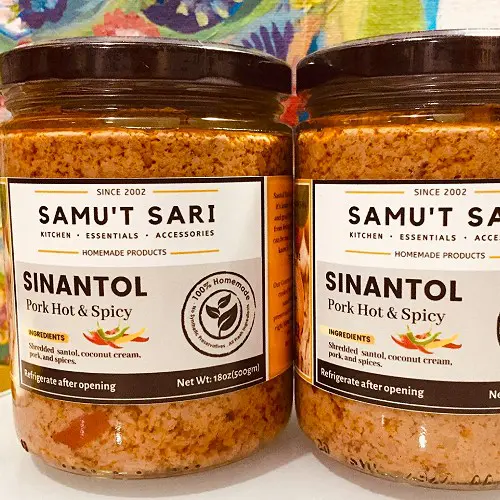
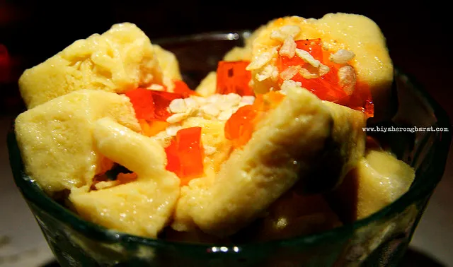
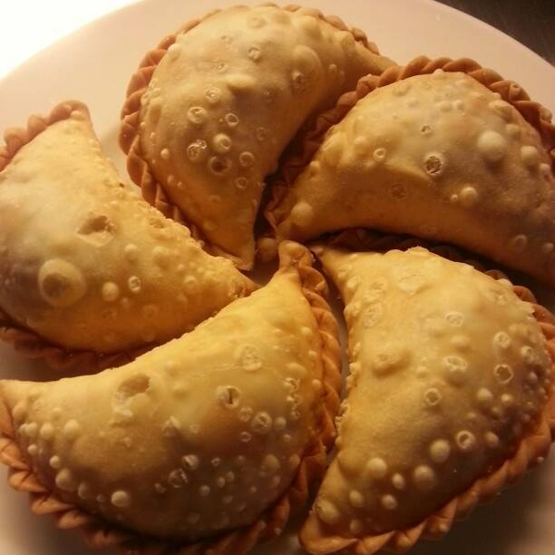
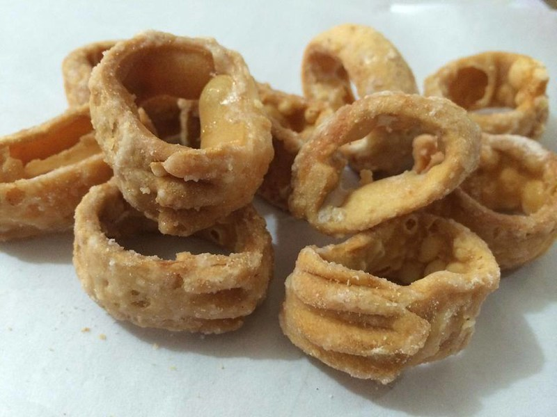
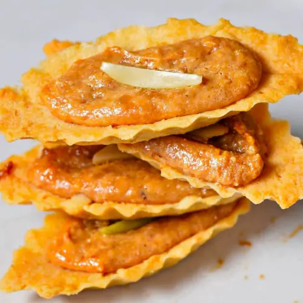
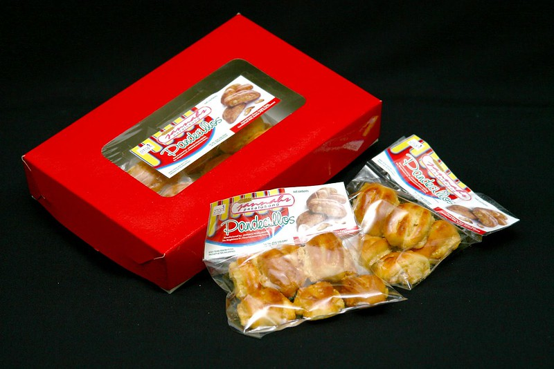
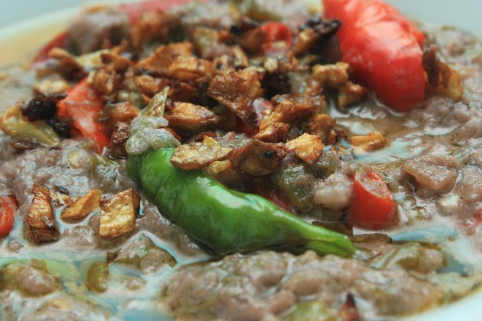
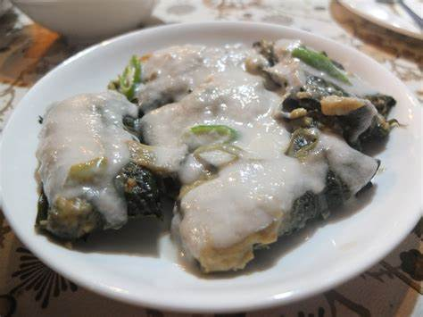

Loading...
Discover > What To Eat
.webp)
Angko
Made of malagkit (glutinous rice) with a sweet sugary paste filling of either coconut meat or peanuts or a mixture of both and served on little squares of banana leaves, these delights last for only one day and are made every morning by the locals of Vinzons.

Sinantol
An authentic Bicolano dish made of ground santol (cotton fruit) flesh cooked in gata (coconut milk). It is a dinner's favorite in Pratesi in Daet.

Ginumis
A truly "tatak-CamNorte" dessert, this frozen delight is a fruit flavored sherbet perfect on sunny days or whenever your sweet tooth desires. Ginumis is popular in K-Sarap Restaurant, one of the oldest food establishments in Daet.

Empanada
Originally a Spanish delicacy, the empanada has become a Filipino favorite over the centuries. It's a crescent-shaped pastry stuffed with ground meat, potatoes, carrots, green peas, eggs, and celery. The crust is baked to a crispy golden-brown perfection, and the filling is a burst of flavors and textures.

Kinakaw
Kinakaw is milk-based sugar coated pastry shaped into rings. Kinakaw is crispy and flaky brought about by decadent butter or pork fat used to make the pastry. Kinakaw is one of the popular pastries from Vinzons, which is known for its rich desserts and milk-based sweets in various shapes and sizes.
Pili Roll
Soft and sweet, pili roll is chiffon with a filling of chopped pili nuts drowning in sweet yema, a sweet paste made of egg yolks and milk. Delicious on its own, pili roll takes on a new life when paired with coffee. Try it at Jannah's Pasalubong.

Pili Tart
Pili tart is a butterd caramel tart shell topped with sweetened pili nuts that is a must buy pasalubong for your loved ones back home. It is a native bicolano food but here in Camarines Norte you can add a variety of pineapple jam to taste.

Pandecillos
You'll be surprised by the different pastries and delicious desserts that can be made with pili and here in Camarines Norte, pandecillos is a must try. These are soft bread with chopped pili nuts and yema on the inside. It comes in a variety of sizes though the bigger ones are filled with more pili nuts.

Dinailan
Its pungent smell immediately catches attention, but its distinct flavor captures the tastebuds of the brave. Dinailan is a dish of sun-dried shrimp paste, made distinctly CamNorteño with the addition of pork, and is sometimes cooked with siling labuyo and gata -a must try in Pratesiin Daet.

Tinumok
A flavor-packed mix of shrimp, coconut meat, onion, and shrimp paste wrapped in gabi (taro) leaves cooked in coconut cream. Tinumok is testament to the Bicolano affinity to spicy dishes. Siling labuyo (capsicum frutescens chili pepper) adds the heat while tinapa (smoked fish) or shrimp or pork - or a combination of the three-adds relish.